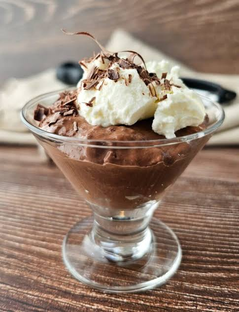
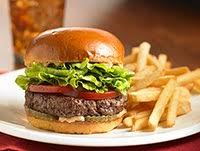
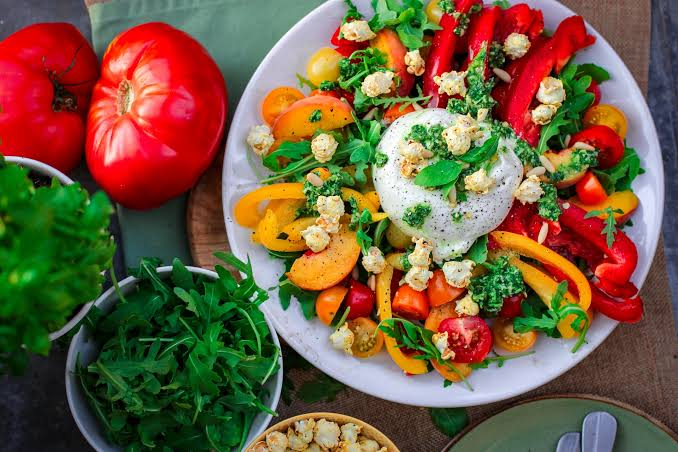
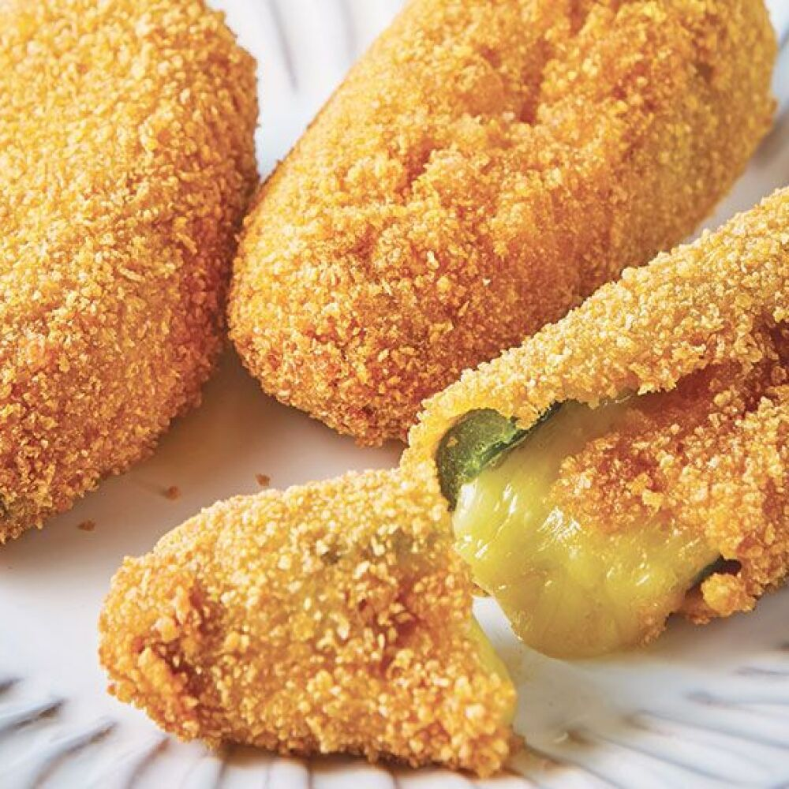

-

Sacia tu antojo dulce con bizcochos, galletas y postres express en taza.
Ver Recetas 🍰 -

Pizzas, hamburguesas y snacks pecaminosos hechos en casa.
Ver Recetas 🍕 -

Batidos frutales, cafés helados y cócteles para acompañar.
Ver Recetas 🍹 -

Opciones bajas en calorías, saludables y keto sin culpa.
Ver Recetas 🥗 -

Comida lista en menos de 15 minutos con pocos ingredientes.
Ver Recetas ⏳